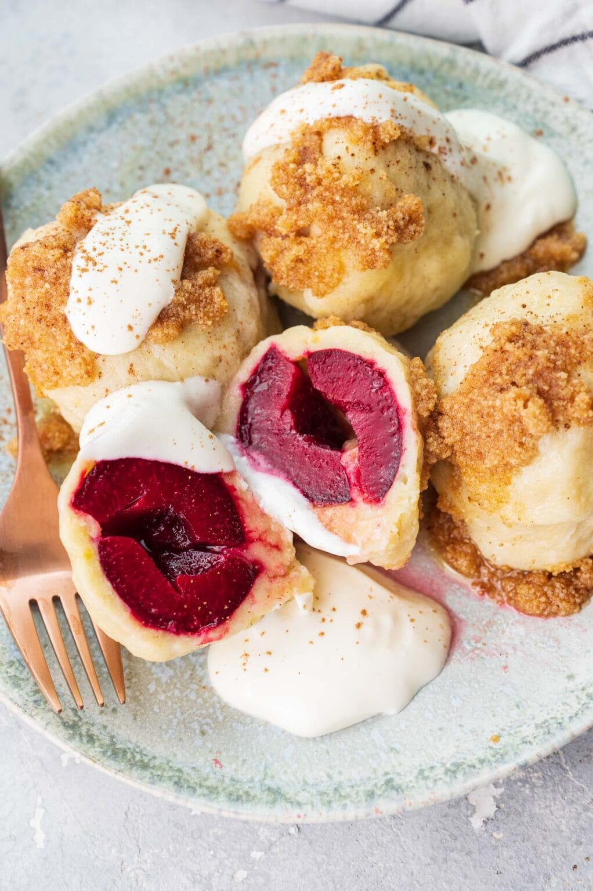

Knedle

Ingredients
1 pound (500g) starchy potatoes,
1 egg,
1 cup (125g) flour,
1/2 teaspoon fine sea salt,
8 plums,
8 sugar cubes,
cinnamon,
butter.
Steps
Make the dough.
Prepare plums.
Share dumplings.
Cook knedle.